鎌倉アルプス
| 日付 | 2007年12月1日（土） |
|---|---|
| 山域 | 三浦半島 |
| メンバー | グループ（男3女3） |
| 山行形態 | 日帰り |
| アクセス | 電車 |
| ルート (Map) | 建長寺→大平山→瑞泉寺 |
前々から気になっていた鎌倉アルプスへ6名で行く。
寺と寺を結ぶ鎌倉丘陵地帯ののんびりハイキング。
9:56 北鎌倉駅到着。駅周辺は観光客で大混雑。
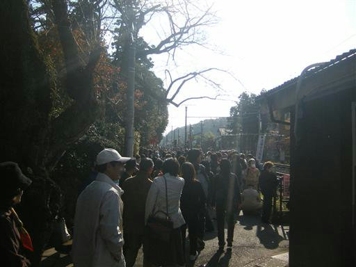
鎌倉アルプスのスタート地点･建長寺に向かう。
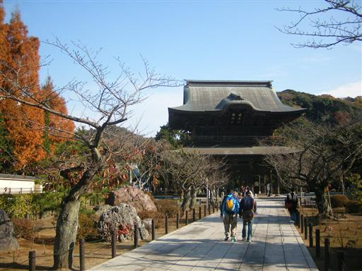
境内には大きな古木が生えている。
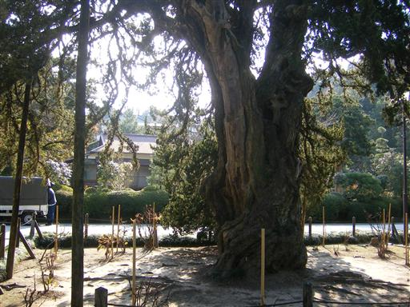
周りにあるもみじの紅葉は非常にきれい。
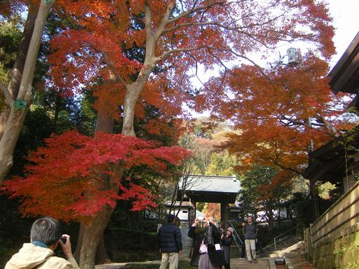
建長寺の裏から鎌倉の丘陵地帯に向かって歩き出す。
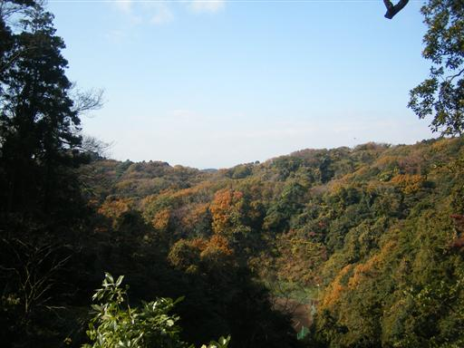
展望台に到着。南方には相模湾が見渡せる。
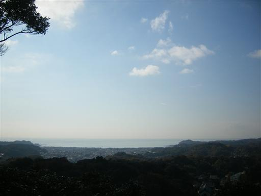
標高100m程度のハイキングコース。
所々展望の開けるところもあり、歩いている人も多い。
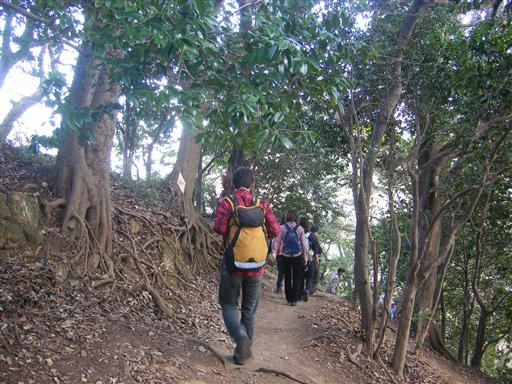
11:39 大平山山頂到着。標高159m。本日の最高峰。
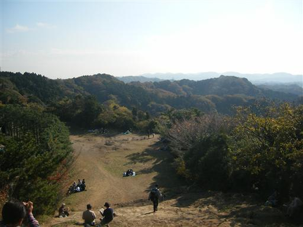
下の広場で昼食をとる。
鎌倉市民の憩いの場なのか、多くの人が集まってくる。

下山地点にある瑞泉寺に寄る。
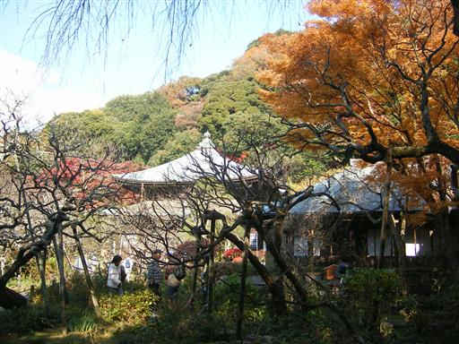
観光客はそこそこいるが比較的落ち着いた雰囲気の寺。
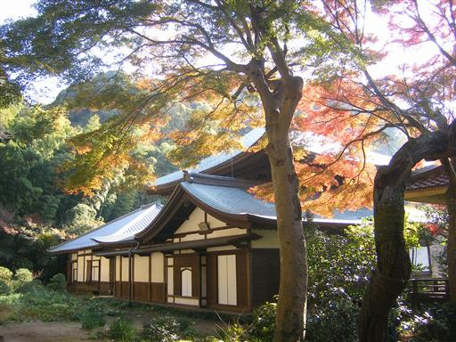
ここの紅葉も非常にきれい。
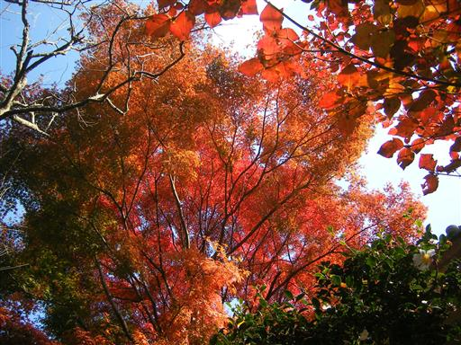
鎌倉駅までの道は車道も歩道も大混雑。
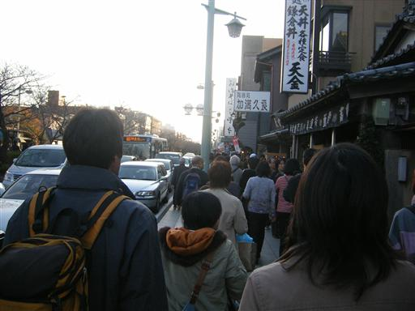
15:33 鎌倉駅到着。
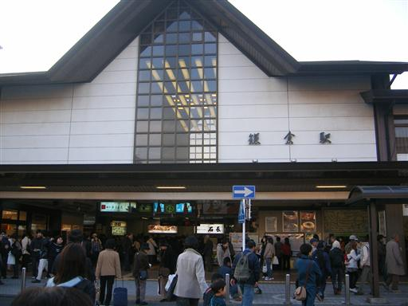
他の山行記録